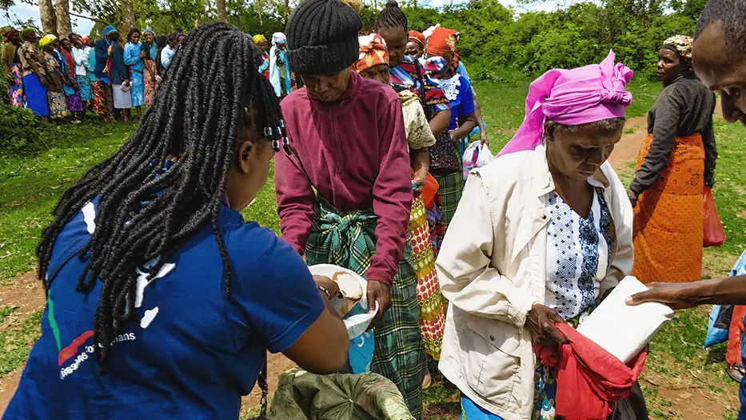
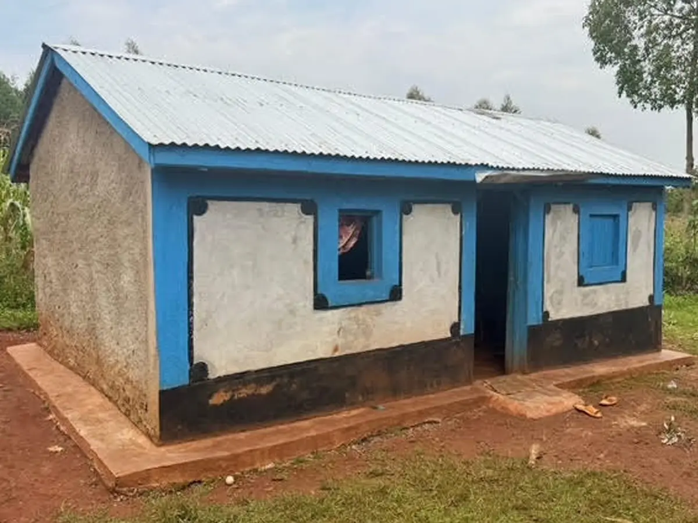

Fund a widow's home
Each year we aim to build six homes for widows in the greatest need. In 2023 we built five, at a cost of $900 each.

How the homes have grown

A home for Mary Esekhon
Meet Mary Esekhon, a widow of 27 years and mother of seven. After the heartbreaking loss of three of her children, she cares for her four remaining children with strength and grace.
Thanks to our supporters, Mary's new home is in progress: a safe, lasting place for her family. We'll share more as it goes up.
Read the mission reportMonica's home
We built a home for Monica, a mother of nine abandoned by her husband, furnished it with beds and blankets, and bring her food each month.
Looking back at the widows’ homes
We looked back on our journey of building homes for widows and saw how far it has come: from simple 8 by 8 foot spaces to today’s 15 by 20 foot homes with two rooms.
What started as a check on past builds became a reminder of what these homes mean to the families living in them.
Help build the next one
Give to widows' support and your gift goes to food and homes for widows around Kipsaina.